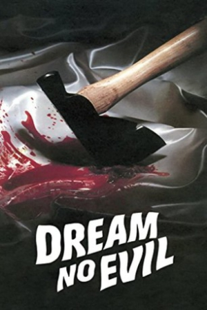
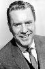
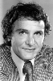
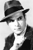

Country:SG, 84 minutes
Spoken languages:English
Genres:Horror, Drama, Mystery
Director(s):John Hayes
Writer(s):John Hayes
Video Codec:Unknown
Number: 2739


Certification:R
Storyline:
Grace is a troubled young lady with some serious daddy issues. She was adopted as a young girl and raised up in a family of traveling faith healers. After the patriarch of that little group passes away Grace's world is thrown into turmoil. The eldest brother turns his back on the family business in favor of medical school despite being engaged to Grace and she is left alone with the shady younger son who puts Grace in a skimpy leotard and incorporates some circus style showmanship to draw in the rubes.
Cast:   

Medium: Bluray,
Comments: Part of: American Horror Project Volume Two
Loaned: No
Aspect ratio: Unknown